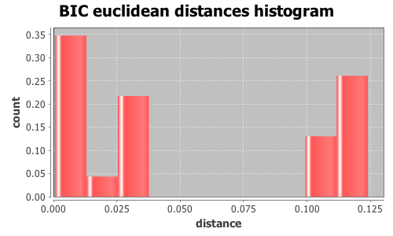
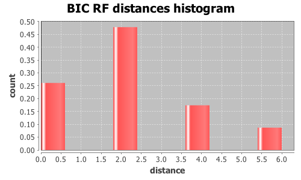

Application Meta
jModeltest 2.1
(c) 2011-onwards D. Darriba, G.L. Taboada, R. Doallo and D. Posada,(1) Department of Biochemistry, Genetics and Immunology
University of Vigo, 36310 Vigo, Spain.
(2) Department of Electronics and Systems
University of A Coruna, 15071 A Coruna, Spain.
e-mail: ddarriba@udc.es, dposada@uvigo.es
Wed Aug 26 16:47:04 EDT 2015
Mac OS X 10.10.5, arch: x86_64, bits: 64, numcores: 4
| Citation: | Darriba D, Taboada GL, Doallo R and Posada D. 2012. "jModelTest 2: more models, new heuristics and parallel computing". Nature Methods 9, 772. |
 Back to top
Back to top Settings
Arguments = -d group3/group3.txt.gene_272.phy -s 3 -i -g 4 -f -BIC -tr 7 -o group3out/g3outgene_272.txtInput Alignment: "group3/group3.txt.gene_272.phy"
NumTaxa = 17
Length = 1,305
Phyml version = 3.0
Phyml binary = PhyML_3.0_macOS_i386
Candidate models = 24
number of substitution schemes = 3
including models with equal/unequal base frequencies (+F)
including models with/without a proportion of invariable sites (+I)
including models with/without rate variation among sites (+G) (nCat = 4)
Optimized free parameters (K) = Substitution parameters + 31 branch lengths + topology
Base tree for likelihood calculations = Maximum Likelihood
Tree topology search operation = NNI
Model Optimization Results
| ID | Name | Partition | -lnL | p | fA | fC | fG | fT | ti/tv | R(a) | R(b) | R(c) | R(d) | R(e) | R(f) | p-inv | shape |
|---|---|---|---|---|---|---|---|---|---|---|---|---|---|---|---|---|---|
| 1 | JC | 000000 | 3330.7153 | 32 | - | - | - | - | - | - | - | - | - | - | - | - | - |
| 2 | JC+I | 000000 | 3287.1696 | 33 | - | - | - | - | - | - | - | - | - | - | - | 0.7350 | - |
| 3 | JC+G | 000000 | 3286.5062 | 33 | - | - | - | - | - | - | - | - | - | - | - | - | 0.1400 |
| 4 | JC+I+G | 000000 | 3283.7358 | 34 | - | - | - | - | - | - | - | - | - | - | - | 0.5760 | 0.9370 |
| 5 | F81 | 000000 | 3324.7482 | 35 | 0.2443 | 0.2180 | 0.2776 | 0.2601 | - | - | - | - | - | - | - | - | - |
| 6 | F81+I | 000000 | 3281.5646 | 36 | 0.2432 | 0.2196 | 0.2778 | 0.2594 | - | - | - | - | - | - | - | 0.7330 | - |
| 7 | F81+G | 000000 | 3284.5459 | 36 | 0.2433 | 0.2188 | 0.2786 | 0.2593 | - | - | - | - | - | - | - | - | 0.1360 |
| 8 | F81+I+G | 000000 | 3278.1230 | 37 | 0.2429 | 0.2196 | 0.2778 | 0.2598 | - | - | - | - | - | - | - | 0.5840 | 0.9910 |
| 9 | K80 | 010010 | 3247.0093 | 33 | - | - | - | - | 2.9431 | - | - | - | - | - | - | - | - |
| 10 | K80+I | 010010 | 3199.2583 | 34 | - | - | - | - | 3.3762 | - | - | - | - | - | - | 0.7470 | - |
| 11 | K80+G | 010010 | 3198.8200 | 34 | - | - | - | - | 3.3461 | - | - | - | - | - | - | - | 0.1190 |
| 12 | K80+I+G | 010010 | 3195.1383 | 35 | - | - | - | - | 3.4216 | - | - | - | - | - | - | 0.6040 | 0.9420 |
| 13 | HKY | 010010 | 3240.8530 | 36 | 0.2408 | 0.2187 | 0.2775 | 0.2630 | 2.9398 | - | - | - | - | - | - | - | - |
| 14 | HKY+I | 010010 | 3193.4586 | 37 | 0.2391 | 0.2211 | 0.2801 | 0.2597 | 3.3681 | - | - | - | - | - | - | 0.7450 | - |
| 15 | HKY+G | 010010 | 3192.9421 | 37 | 0.2391 | 0.2207 | 0.2800 | 0.2601 | 3.3387 | - | - | - | - | - | - | - | 0.1240 |
| 16 | HKY+I+G | 010010 | 3189.2889 | 38 | 0.2389 | 0.2213 | 0.2809 | 0.2590 | 3.4170 | - | - | - | - | - | - | 0.5970 | 0.9190 |
| 17 | SYM | 012345 | 3242.5555 | 37 | - | - | - | - | - | 1.9526 | 7.1395 | 1.1405 | 1.7010 | 9.9179 | 1.0000 | - | - |
| 18 | SYM+I | 012345 | 3194.8973 | 38 | - | - | - | - | - | 1.9063 | 7.6927 | 1.2837 | 1.5588 | 12.2190 | 1.0000 | 0.7440 | - |
| 19 | SYM+G | 012345 | 3194.7734 | 38 | - | - | - | - | - | 1.9231 | 7.7602 | 1.2502 | 1.5728 | 11.9163 | 1.0000 | - | 0.1230 |
| 20 | SYM+I+G | 012345 | 3191.4228 | 39 | - | - | - | - | - | 1.9666 | 8.0210 | 1.2677 | 1.5700 | 12.2447 | 1.0000 | 0.5840 | 0.8620 |
| 21 | GTR | 012345 | 3233.6466 | 40 | 0.2458 | 0.2091 | 0.2845 | 0.2606 | - | 2.2131 | 7.3879 | 1.2277 | 1.9167 | 11.7826 | 1.0000 | - | - |
| 22 | GTR+I | 012345 | 3187.0497 | 41 | 0.2436 | 0.2138 | 0.2869 | 0.2557 | - | 2.3585 | 8.0781 | 1.4018 | 1.7614 | 14.1806 | 1.0000 | 0.7380 | - |
| 23 | GTR+G | 012345 | 3186.8717 | 41 | 0.2439 | 0.2134 | 0.2865 | 0.2562 | - | 2.3919 | 8.1896 | 1.3722 | 1.7893 | 13.9296 | 1.0000 | - | 0.1330 |
| 24 | GTR+I+G | 012345 | 3183.6213 | 42 | 0.2431 | 0.2143 | 0.2871 | 0.2555 | - | 2.4699 | 8.5270 | 1.4089 | 1.7915 | 14.4437 | 1.0000 | 0.5900 | 0.9330 |
There are 7 different topologies. The following table shows the models supporting each topology and the rank according to each Information Criterion, as well as Robinson-Foulds and Euclidean distances with the tree of the best-fit model.
| ID | Models | Topology | AIC | BIC | AICc | DT | |
|---|---|---|---|---|---|---|---|
| 0 |
K80+I K80+G K80+I+G HKY+I HKY+I+G SYM+G SYM+I+G
|
RANK | - | 0 | - | - | |
| Weight | - | 0.9972 | - | - | |||
| RF | - | 0 | - | - | |||
| AVG Distance | - | 2.2945e-03 | - | - | |||
| Distance VAR | - | 2.2960e-06 | - | - | |||
| 1 |
JC JC+I JC+G JC+I+G F81 F81+I K80 HKY
|
RANK | - | 1 | - | - | |
| Weight | - | 0.0000 | - | - | |||
| RF | - | 2 | - | - | |||
| AVG Distance | - | 7.2271e-02 | - | - | |||
| Distance VAR | - | 1.5609e-03 | - | - | |||
| 2 |
HKY+G GTR+G GTR+I+G
|
RANK | - | 2 | - | - | |
| Weight | - | 0.0027 | - | - | |||
| RF | - | 2 | - | - | |||
| AVG Distance | - | 1.2203e-01 | - | - | |||
| Distance VAR | - | 2.0113e-06 | - | - | |||
| 3 |
F81+I+G
|
RANK | - | 3 | - | - | |
| Weight | - | 0.0000 | - | - | |||
| RF | - | 4 | - | - | |||
| AVG Distance | - | 1.1515e-01 | - | - | |||
| Distance VAR | - | 0.0000e+00 | - | - | |||
| 4 |
SYM+I GTR GTR+I
|
RANK | - | 4 | - | - | |
| Weight | - | 0.0000 | - | - | |||
| RF | - | 4 | - | - | |||
| AVG Distance | - | 1.3438e-02 | - | - | |||
| Distance VAR | - | 6.6379e-05 | - | - | |||
| 5 |
F81+G
|
RANK | - | 5 | - | - | |
| Weight | - | 0.0000 | - | - | |||
| RF | - | 6 | - | - | |||
| AVG Distance | - | 1.1140e-01 | - | - | |||
| Distance VAR | - | 0.0000e+00 | - | - | |||
| 6 |
SYM
|
RANK | - | 6 | - | - | |
| Weight | - | 0.0000 | - | - | |||
| RF | - | 6 | - | - | |||
| AVG Distance | - | 3.4815e-02 | - | - | |||
| Distance VAR | - | 0.0000e+00 | - | - |
BIC Selection Results
Model selected
| Model | K80+I+G | ||
|---|---|---|---|
| partition | 010010 | ||
| -lnL | 3195.1383 | ||
| K | 35 | ||
| freqA | - | R(a) | - |
| freqC | - | R(b) | - |
| freqG | - | R(c) | - |
| freqT | - | R(d) | - |
| ti/tv | 3.4216 | R(e) | - |
| R(f) | - | ||
| p-inv | 0.6040 | gamma | 0.9420 |
Best model tree
(((I0135:0.00197789,(((I0147:0.01368937,I0111:0.09183500):0.00000019,((((I0076:0.00378289,I0075:0.00978145):0.00195810,I0119:0.02272344):0.00086318,((I0152:0.00344475,(I0151:0.00605659,I0148:0.00347859):0.00158636):0.00362398,((I0150:0.00239085,I0144:0.00717778):0.00074542,I0149:0.00392748):0.00000004):0.00162363):0.00157947,I0158:0.01321529):0.00151835):0.00084024,I0127:0.00550420):0.00041772):0.00155682,I0141:0.00923224):0.00269943,I0068:0.00096525,I0067:0.00370025);
Display best model tree in PhyloWidget
| Model | -lnL | K | BIC | delta | weight | cumWeight |
|---|---|---|---|---|---|---|
| K80+I+G | 3195.1383 | 35 | 6641.3651 | 0.0000 | 0.3976 | 0.3976 |
| K80+G | 3198.8200 | 34 | 6641.5546 | 0.1896 | 0.3617 | 0.7593 |
| K80+I | 3199.2583 | 34 | 6642.4311 | 1.0660 | 0.2333 | 0.9927 |
| HKY+I+G | 3189.2889 | 38 | 6651.1882 | 9.8232 | 0.0029 | 0.9956 |
| HKY+G | 3192.9421 | 37 | 6651.3206 | 9.9556 | 0.0027 | 0.9983 |
| HKY+I | 3193.4586 | 37 | 6652.3537 | 10.9886 | 0.0016 | 1.0000 |
| SYM+G | 3194.7734 | 38 | 6662.1572 | 20.7921 | 0.0000 | 1.0000 |
| SYM+I | 3194.8973 | 38 | 6662.4051 | 21.0400 | 0.0000 | 1.0000 |
| SYM+I+G | 3191.4228 | 39 | 6662.6300 | 21.2649 | 0.0000 | 1.0000 |
| GTR+G | 3186.8717 | 41 | 6667.8756 | 26.5105 | 0.0000 | 1.0000 |
| GTR+I | 3187.0497 | 41 | 6668.2316 | 26.8666 | 0.0000 | 1.0000 |
| GTR+I+G | 3183.6213 | 42 | 6668.5488 | 27.1838 | 0.0000 | 1.0000 |
| K80 | 3247.0093 | 33 | 6730.7593 | 89.3942 | 0.0000 | 1.0000 |
| HKY | 3240.8530 | 36 | 6739.9686 | 98.6035 | 0.0000 | 1.0000 |
| SYM | 3242.5555 | 37 | 6750.5474 | 109.1823 | 0.0000 | 1.0000 |
| GTR | 3233.6466 | 40 | 6754.2516 | 112.8865 | 0.0000 | 1.0000 |
| JC+G | 3286.5062 | 33 | 6809.7529 | 168.3879 | 0.0000 | 1.0000 |
| JC+I | 3287.1696 | 33 | 6811.0798 | 169.7147 | 0.0000 | 1.0000 |
| JC+I+G | 3283.7358 | 34 | 6811.3861 | 170.0210 | 0.0000 | 1.0000 |
| F81+I | 3281.5646 | 36 | 6821.3916 | 180.0265 | 0.0000 | 1.0000 |
| F81+I+G | 3278.1230 | 37 | 6821.6825 | 180.3175 | 0.0000 | 1.0000 |
| F81+G | 3284.5459 | 36 | 6827.3543 | 185.9892 | 0.0000 | 1.0000 |
| JC | 3330.7153 | 32 | 6890.9973 | 249.6322 | 0.0000 | 1.0000 |
| F81 | 3324.7482 | 35 | 6900.5849 | 259.2198 | 0.0000 | 1.0000 |
| -lnL: | negative log likelihod |
| K: | number of estimated parameters |
| BIC: | Bayesian Information Criterion |
| delta: | BIC difference |
| weight: | BIC weight |
| cumWeight: | cumulative BIC weight |
Confidence interval
There are 24 models in the 100.00% confidence interval:
K80+I+G K80+G K80+I HKY+I+G HKY+G HKY+I SYM+G SYM+I SYM+I+G GTR+G GTR+I GTR+I+G K80 HKY SYM GTR JC+G JC+I JC+I+G F81+I F81+I+G F81+G JC F81

Euclidean distances histogram from each model optimized tree to K80+I+G tree.
Euclidean distances histogram from each model optimized tree to K80+I+G tree.

Robinson-Foulds distances histogram from the different topologies to K80+I+G topology.
Robinson-Foulds distances histogram from the different topologies to K80+I+G topology.